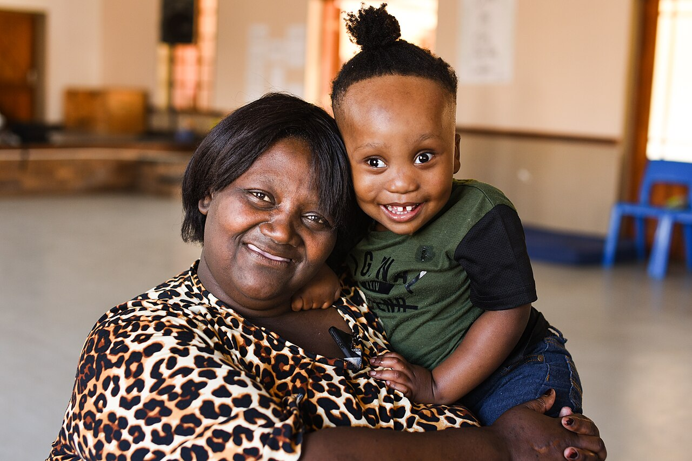
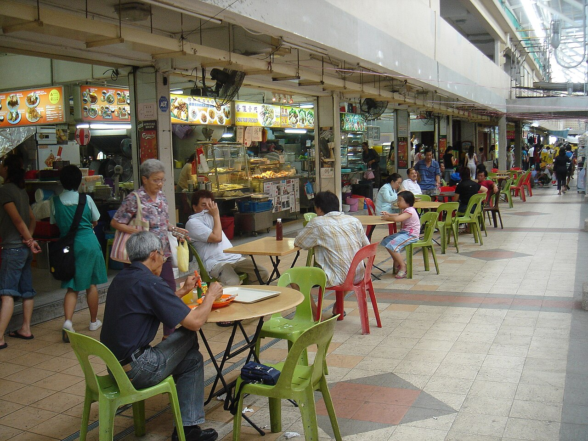

1The problem

AnikaMeyer, CC BY-SA 4.0
62median age of daily caregivers [1]
Shixart1985, CC BY 2.0
Support is online, but hard to see and find [9, 11, 13]

mailer_diablo, CC BY-SA 3.0
They won't ask for help [3, 5, 6]
Older caregivers with declining vision give up on online support forms.
No caregiving-specific digital help exists [14]
2The solution: Kopi reads, explains, fills in. You decide.
✍️
Fills in, reads back[11]
“Shall I help fill in this box?”
YesNot sure
Shixart1985, CC BY 2.0
“I did it myself.”
🗣️Voice-first, no menus
🔑Singpass stays with you [14]
🤝Set up free by CCs [9, 10]
3Three lenses, one design
🔬
STEM
Speech + screen-reading AI for low vision [9, 11]
🏛️
Governance & Business
Works with agencies, saves time and work [14–18]
❤️
Society
Dignity: do it yourself, no burden [3, 5, 6]
Society sets the goal · Governance sets the limits · STEM sets the interface
4Human in the loopproposed
❓
Unsure? Hotline officer takes over [8]
🔒
NRIC, bank, pay? User only
⏸️
Hesitates? Pause, nothing sent
🚨
Scam? Halt, flag to agency
5Concerns
🛡️
Privacy: on-device, deleted after use
🏥
Install: free setup by partners [9, 10]
⚠️
Wrong advice: says “not sure”
6Why act?
🧓CaregiversConfidence
🏢AgenciesSchemes reach users [13, 14]
🏘️CommunitiesOutreach tool
7Pilot
1 CC · ~30 caregivers · 3 months
Track: forms abandoned · hotline calls · confidence · loneliness [5, 8, 11, 13]